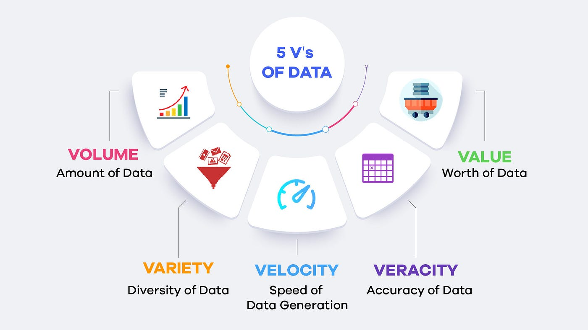

1 大数据基本概念
在当今数字化时代，大数据已经成为各行各业的关键驱动力之一。从互联网的数据交互到工业生产的智能化管理，大数据的应用无处不在，其影响力和价值愈发凸显。本章将介绍大数据的基本概念，从定义、特征到应用领域的探索，旨在帮助读者全面了解大数据的重要性及其在各个领域的应用前景。通过学习本章内容，读者将能够深入了解大数据的本质、特点以及对社会发展的深远影响，从而更好地把握和应用大数据技术。
1.1 大数据的概念
大数据（Big Data）是指那些因其大小、复杂性或增长速度而难以使用传统数据处理方法有效管理和处理的数据集，其关键特征包括三个，常被简称为“3V”：
- 体量（Volume）：大数据的最显著特征是数据量巨大，通常以TB、PB甚至更大的单位来衡量。
- 速度（Velocity）：数据的生成速度非常快，常常需要实时或几乎实时的处理能力，以便快速捕捉、分析和响应。
- 多样性（Variety）：大数据包括各种类型的数据，如结构化数据（例如数据库中的表格数据）、半结构化数据（如XML数据）、非结构化数据（如文本、视频和图片）。
后来随着大数据概念的扩展，人们逐渐为其又补充了其他特性，包括：
- 真实性（Veracity）：由于数据来源多样，数据的质量和准确性也各不相同，这要求在处理数据前进行验证和清洗。
- 价值（Value）：大数据的价值在于能够从中提取有用的信息和洞察，帮助做出决策。然而，大数据本身并不自动等同于“有价值的数据”，必须通过适当的分析才能发现其中的价值。
以上特点统称大数据的5V特性（见图1.1）。
1.2 大数据的价值
引入大数据的概念是为了应对和利用在现代信息技术快速发展和数字化转型过程中生成的海量数据，具有多种价值（如图1.2）。其关键原因包括：
- 应对信息爆炸：随着互联网、社交媒体、智能设备等的普及，每天产生的数据量呈指数级增长。传统的数据处理工具和技术已无法有效管理和分析这些海量的数据。大数据技术应运而生，提供了新的方法和工具来存储、处理和分析这些大规模数据集。
- 洞察和决策支持：大数据技术能够帮助组织从大量的结构化和非结构化数据中提取有价值的信息和洞察，支持更加准确和高效的决策制定。这在商业竞争、政府管理、公共安全、健康医疗等多个领域尤为重要。
- 增强竞争力：在商业环境中，利用大数据技术可以帮助企业更好地了解市场趋势、消费者行为和运营效率，从而优化产品和服务，提高客户满意度，增强企业的市场竞争力。
- 推动创新：大数据不仅可以改进现有的产品和服务，还可以激发新的商业模式和创新思路。例如，通过数据挖掘和机器学习技术，企业可以开发出新的推荐系统、智能化服务和个性化解决方案。
- 社会效益：大数据技术在社会科学、环境监测、灾害预防和公共健康等领域的应用也显示了其在推动社会进步和提高人类福祉方面的巨大潜力。
总的来说，大数据的提出是为了更好地利用在数字化时代产生的庞大数据资源，提高数据处理的能力和效率，支持科学研究和商业决策，促进经济发展和社会进步。
1.3 大数据的技术
大数据技术是指一系列方法、工具和框架，用于有效处理和分析在传统数据库管理工具无法有效处理的大量、高速、多样化的数据集。常用的大数据技术包括大规模并行处理、分布式文件系统、云计算平台、互联网、可扩展的存储系统等（如图1.3，这些技术能够从巨大的数据集中提取有用的洞察和信息，从而支持决策制定和业务优化。以下是几个主要方面：
数据存储：大数据技术提供了专门的存储解决方案，用于存储大规模数据。例如，Hadoop Distributed File System (HDFS) 是为处理大量数据而设计的分布式文件系统，能够存储不同类型的数据，并支持高吞吐量的数据访问。
数据处理：为了处理和分析大数据，科学家开发了多种计算模型和框架。例如，Apache Hadoop 的 MapReduce 允许对大量数据进行并行处理；而Apache Spark 则提供了一个快速的、通用的、基于内存的数据处理平台，能够执行批处理和实时数据处理任务。
数据分析：大数据技术还包括复杂的数据分析工具，如R、Python等，这些工具可以处理高速流动的大量数据，支持机器学习、预测分析、数据挖掘和统计分析等高级分析功能。
实时处理：技术如 Apache Storm 和 Apache Flink 支持对实时数据流进行处理，使得企业可以即时分析和响应数据。这对于需要快速决策的应用场景（如金融市场分析、网络安全和实时广告投放）至关重要。
数据可视化：大数据技术还涉及数据可视化工具，这些工具可以帮助用户更容易地理解数据分析结果。通过图表、图形和仪表板等形式，数据可视化使复杂数据变得易于接受和理解。
数据安全与隐私：随着数据量的增加，数据安全和隐私保护也成为大数据技术的重要组成部分。这包括确保数据的完整性、保密性以及遵守相关的法律和规章制度。
大数据技术正成为企业和组织不断寻求的解决方案，以便更好地理解和利用日益增长的数据资源，推动业务成长和创新。
1.4 大数据之于你我
尽管在上文中我们探讨了很多广义上的大数据概念，但是在实际的学习、工作和生活中，我们所碰到的大数据问题往往是属于狭义的大数据范畴。举一些简单的例子：
- 在参加建模大赛中，有一份大小为9G的数据集，但是当前你手里只有一个内存（RAM）为8G的个人笔记本电脑。在没有其他计算资源的情况下，如何合理地发挥计算机的性能，让其能够对该数据集进行基本的数据分析？
- 你是企业中的业务员，负责对各个部门的劳动绩效进行统计，并生成Excel报表给各部门领导进行参考。各个部门提供的数据都是规整的，如何使用脚本让整个过程自动化完成？
- 你在量化金融公司担任建模分析师，需要对不同品类贵金属期货进行回归分析。每一种品类数据量都非常大，如何才能够利用并行框架多快好省地建立模型？
在上述例子中，如果不是因为数据规模的问题，那么我们使用常规工具都可以很快获得结果。但是由于对数据处理的时空限制（在时间上，处理速度需要更快；在空间上，需要能够容纳大数据），导致本来非常普通的数据分析问题变得非常困难。这就是本书要聚焦的问题，即如何基于数据分析基本原理和相关实践工具，来突破大数据分析的时空限制。书中将以R语言作为基本工具，对大数据高效分析和高性能计算进行介绍，让读者对相关的概念和方法进行掌握。
1.5 小结
本章主要对大数据的基本概念进行介绍，在宏观上把握大数据是什么、大数据有什么价值、当前大数据都有什么技术，最后从自身角度出发，辨明我们在生活、工作和学习中可能碰到的大数据问题，进而对往后的章节进行学习。